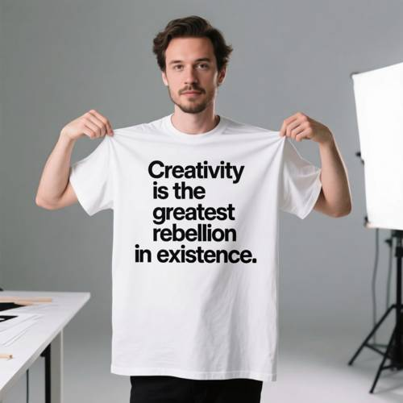
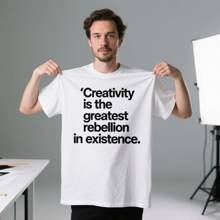
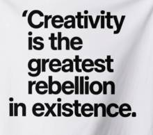
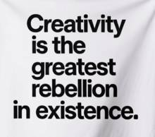

Text Generation — A designer is showing off his T-shirt work. The white T-shirt has a bo
A designer is showing off his T-shirt work. The white T-shirt has a bold English letter printed on the chest,"Creativity is the greatest rebellion in existence."


Judge — Direct
- FAILText Generation — The text printed on the white T-shirt is "Creativity is the greatest rebellon in existence.". This contains a spelling error; the word "rebellion" from the prompt is misspelled as "rebellon".
Judge — Continuum
- PASSText Generation — The white T-shirt has black, bold text printed on it. The text reads, "Creativity is the greatest rebellion in existence.", which perfectly matches the text required by the prompt.
What the agent did
Thinking
The user wants an image: a designer showing off his T-shirt work. White T-shirt with bold English letters on the chest: "Creativity is the greatest rebellion in existence." Key requirement: the text must be rendered correctly on the T-shirt. This is a text-heavy prompt, so I need to: 1. Generate with qwen-image (fixed model) 2. Inspect the text by zooming with inspect_region 3. Edit if wrong, mark best as I go The text is long: "Creativity is the greatest rebellion in existence." That's a lot of text to render on a T-shirt. Qwen-Image is actually quite good at text rendering compared to other models. Let me craft a prompt. The phrase "Creativity is the greatest rebellion in existence" is a quote attributed to Osho. I should not add backstory/names — just visual description. Prompt idea: "A designer proudly showing off his T-shirt work: a man holding up / wearing a plain white T-shirt with bold black English text printed on the chest reading 'Creativity is the greatest rebellion in existence.' Studio setting, product photography." Text should be on chest, bold. Let me make it a person wearing the T-shirt, pointing to it or presenting it. Or holding it up. Wearing it is simpler for text rendering — a flat chest area. Let me generate: man wearing a plain white T-shirt, standing against a neutral studio background, hands pulling the shirt taut or arms slightly out to display the chest print, bold black sans-serif capital letters reading "Creativity is the greatest rebellion in existence." arranged in multiple lines across the chest. Multi-line layout helps rendering. Let me specify: the text printed in bold black letters across the chest in several lines. I'll write: "A designer showing off his T-shirt work: a young man standing in a design studio, proudly wearing a plain white T-shirt and pointing to the bold black text printed on the chest. The shirt reads 'Creativity is the greatest rebellion in existence.' in large bold sans-serif capital letters arranged in stacked lines. Clean studio lighting, front view, product photography style." Should I use capital letters? "bold English letter printed on the chest" — bold letters. I'll go with bold uppercase for the main text to maximize legibility, but the quote as given has sentence case. The requirement is the string matches including capitalization? The instruction says compare with the requested string, including capitalisation. Hmm. The requested string is "Creativity is the greatest rebellion in existence." with a period. I should try to render it exactly: "Creativity is the greatest rebellion in existence." To be safe, I'll aim for sentence case as written, but bold letters. Actually all-caps would change capitalization. The safest is to render exactly: Creativity is the greatest rebellion in existence. Let me generate and then zoom in to verify text. Width/height: default 1024x1024. The harness controls sizes; I shouldn't set seed. I'll just omit size params (defaults 1024x1024). Let me start.
Model
I'll generate this image, then verify the printed text carefully since accurate lettering is the critical part of this prompt.
Step 1 — `generate_image`
{
"prompt": "A designer proudly showing off his T-shirt work: a man standing in a bright design studio, front view, wearing a plain white T-shirt and holding the fabric taut at the sides with both hands to display the chest print. Bold black sans-serif text is printed across the chest of the white T-shirt in several stacked lines, reading exactly: \"Creativity is the greatest rebellion in existence.\" Clean soft studio lighting, neutral gray background, sharp product-photography style, the lettering crisp and fully legible.",
"model": "qwen-image"
}Result img_0

Thinking
The image looks good at first glance. The text appears to read "'Creativity is the greatest rebellion in existence." — but I need to zoom in to verify the letters one by one. I notice at full scale: there seems to be an opening quote mark before "Creativity" and a period at the end. Let me inspect the text region closely. The shirt is quite large/oversized which is fine — he's showing off the shirt. Let me zoom into the text area.
Step 2 — `inspect_region`
{
"image": "img_0",
"roi": {
"x1": 0.33,
"y1": 0.39,
"x2": 0.66,
"y2": 0.68
},
"normalized": true,
"padding": 0.05
}Result img_1

Thinking
Reading the zoomed crop letter by letter: Line 1: 'Creativity — there's an opening single quote mark before "Creativity". Letters: C-r-e-a-t-i-v-i-t-y ✓ Line 2: is the ✓ Line 3: greatest ✓ Line 4: rebellion — r-e-b-e-l-l-i-o-n ✓ Line 5: in existence. — i-n e-x-i-s-t-e-n-c-e-. ✓ The only deviation from the requested string is the leading single quote mark (') before "Creativity". The requested text is: Creativity is the greatest rebellion in existence. — no opening quote. The trailing period is fine since the requested string includes a period. So I should edit to remove the stray apostrophe/quote mark before "Creativity". This is a small fix. I'll use edit_image with qwen-image, naming the specific change: remove the single quotation mark before "Creativity" so the text begins directly with "Creativity". Per the policy: "For text specifically: name the incorrect string and the correct one. Do not re-describe the rest of the scene." Prompt: "Remove the stray single quotation mark at the start of the shirt text, so the first line reads 'Creativity' instead of ''Creativity'. Keep everything else unchanged." Let me do that edit. If it fails or drifts, I can retry with different approach.
Step 3 — `edit_image`
{
"image": "img_0",
"prompt": "On the T-shirt print, remove the stray single quotation mark before the word \"Creativity\" so the first line reads exactly \"Creativity\" with no quote mark; keep all other letters, layout, and the rest of the image unchanged.",
"model": null
}Result img_2
Thinking
The quote mark appears to be removed. Let me zoom in to verify the text is now exactly right.
Model
The quote mark appears gone. Verifying the lettering at full resolution:
Step 4 — `inspect_region`
{
"image": "img_2",
"roi": {
"x1": 0.32,
"y1": 0.38,
"x2": 0.66,
"y2": 0.68
},
"normalized": true,
"padding": 0.05
}Result img_3

Thinking
Now reading letter by letter: Line 1: Creativity — C-r-e-a-t-i-v-i-t-y ✓ (no quote mark) Line 2: is the ✓ Line 3: greatest ✓ Line 4: rebellion ✓ Line 5: in existence. ✓ (with trailing period, as requested) The text now matches exactly: "Creativity is the greatest rebellion in existence." The scene: a designer (man) in a studio, holding up/wearing a white T-shirt showing off the print. Bold black letters on the chest. White T-shirt ✓. Studio setting with softbox and desk ✓. Everything checks out. The image is good. Mark img_2 as best and stop.
Step 5 — `mark_best`
{
"image": "img_2",
"reason": "White T-shirt with bold chest print reading exactly \"Creativity is the greatest rebellion in existence.\" \u2014 verified letter-by-letter at full resolution; designer presenting his work in a studio, clean composition."
}Thinking
Done. The image is marked. I'll give a brief summary to the user.
Model
Done! The final image shows a designer in a studio proudly presenting his work — holding a white T-shirt taut to display the bold black chest print, which reads exactly: **Creativity is the greatest rebellion in existence.** The lettering was verified at full resolution for correct spelling and capitalization, and the scene includes studio details (softbox light, work desk) that fit the "designer showing off his T-shirt work" brief.